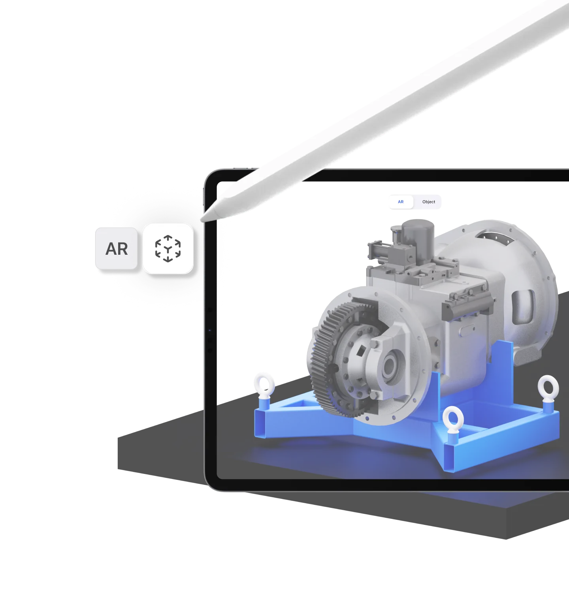
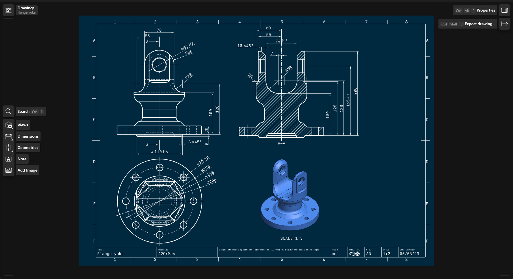

用了半年 Shapr3D 才发现的四个隐藏能力，藏得真深
Shapr3D 远不止 iPad 上画画图那么简单。AR 预览免费档也能用、轻席位让协作者零成本参与、工程图跟着 3D 改自动更新——这几个功能官方不怎么宣传，但用起来真香。
你以为 Shapr3D 只是 iPad 上用来画画草图的轻量建模工具？其实Shapr3D官网上列的功能远不止于此。我之前也这么想，直到翻遍它的菜单和设置，才发现几个官方几乎不宣传的隐藏能力，每一个都能实实在在省时间。
免费档也能用的 AR 查看器
这是我最近才注意到的第一个彩蛋。AR 查看器所有档位都开放，包括完全免费的 Basic 档——从官方下载就能拿到，我之前一直以为这是 Pro 以上才能用的高级功能。
操作特别简单：iPad 或 iPhone 上打开任意模型，点一下 AR 图标，模型直接投到桌面或地板上，按真实比例显示。你可以拿着手机走一圈，蹲下来看底面，凑近量握距——屏幕上看一百遍也看不出的尺寸感，AR 里一眼就有。

什么人用得上：做产品设计的，把外壳模型放进真实台面看看占多大地方；工装夹具设计师，现场投影比对位置是否冲突。打印爱好者反而用得少——他们更关心导出 STL 能不能切片。
Contributor 轻席位：协作者零成本参与
团队协作这块，Shapr3D 藏了一层容易被忽略的设计。从 Pro 档开始，团队有 Editor 和 Contributor 两种席位。大家一般只关注 Editor（主力付费席位），但 Contributor 才是那个真正聪明的机制。
Contributor 不能自己花钱订阅获得——必须由企业用公司域名邮箱邀请。每团队最多两席，但一旦激活，被邀请的人能参与所有团队共享项目的编辑，建模工具完全解锁，而且不占用 Editor 名额。
这意味着什么：如果你是一个 Pro 订户，带两个偶尔帮忙建模的同事，他们不用自己掏钱买订阅，你在团队里加两个 Contributor 席位就行。官方定价里这个功能藏得极深，不把帮助中心翻到席位规则那页根本看不到。
踩过的坑：邀请邮箱必须和你填写的公司域名一致，个人邮箱收不到邀请。而且退出团队后个人项目不受影响，团队项目留在团队里——别以为退出就能带走共享模型。
2D 工程图跟着 3D 自动更新
给加工商交付二维图纸，是 Shapr3D 最像传统 CAD 软件的地方，但很多人不知道的是：你在 3D 空间里改一个尺寸，所有关联的 2D 视图和标注自动联动更新，完全不用重画。
创建路径藏在项目侧栏的 Drawings 下面，点「创建图纸」就能从选中的 3D 实体直接生成四视图——主视图、左视图、俯视图、等轴测，ISO 或 ANSI 图框任选，比例也能调。具体的出图流程在Shapr3D文档里有分步说明。生成后双击任意视图可以改比例、切换虚线显示，标题栏里的图号、材料、单位都能直接双击改写。

这个功能属于 Pro 档，免费档只有试用期能用（官方标注 trial only）。但如果你的工作流是从 3D 设计直接到加工出图，这一步能省掉打开 AutoCAD 重新画一遍的麻烦，图纸质量也更可靠——毕竟人画的二维图总有漏标或尺寸对不上的时候。
能分享就别导出：评审链接秒杀文件传输
官方帮助中心有一句话我特别认同：能分享就别导出。大多数人的思维定式是「改完模型 → 导出 STEP → 发文件」，但 Shapr3D 给了一条更轻便的路——发布当前版本生成浏览器评审链接。
拿到链接的人不用装任何软件，浏览器里就能看模型、旋转缩放、提评论。外部评审、客户确认、远程协作全靠这一条链接搞定，省去导 PDF、导 AR 文件、传大文件的折腾。
哪些功能别碰或等一等
有两个点我建议先确认再用：一是 Contributor 席位的邀请必须走公司域名邮箱，个人邮箱不通过；二是免费档导出只能走低分辨率 STL 和 3MF，交加工商是不行的——真想送 CNC 加工，还是得升 Pro 解锁 STEP 和 XT 格式。
把 Shapr3D 用透的关键，大概就是别被「iPad 轻量建模」这个标签框住。它藏着的这些能力，每一个单独拿出来都能对应一个完整的工作流。上面提到的这套资料在GitHub、Gitee、GitCode三个仓库都能拿到，方便不同网络环境的人查阅。